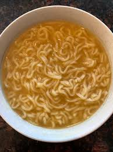

How to make Ramen Noodles

ingredients
- Packet of instant ramen noodles
- Soy sauce
- 1 onion
Instructions
- Place water in pot while on high heat.
- Dice onion.
- Once water begins to boil add ramen noodle block.
- Place diced onion in pot.
- Lower to medium heat.
- Ocasional stir ramen noodles to break block up.
- Remove from heat once the noodles are the texture you like.
- Drain water.
- Add flavor packet with soy sauce and enjoy.